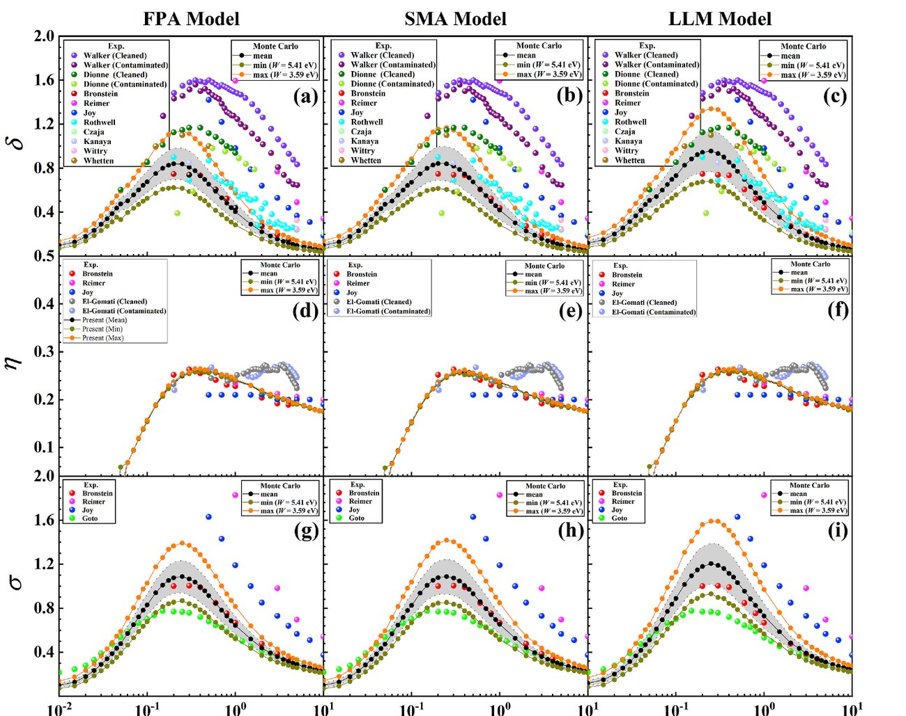

Uncertainty Quantification for Simulation Metrology
Simulation is trusted to measure nanometre-scale features on microchips, yet the reliability of those predictions had never been quantified across the full space of physical models feeding the calculation.
Every simulated measurement rests on interchangeable choices of scattering and energy-loss models. If those choices move the answer more than the measurement tolerance, the result cannot be trusted for metrology.
The first systematic uncertainty study of its kind: line-scan profiles were regenerated across 17,280 combinations of elastic and inelastic model inputs, isolating geometric, physical-model, and statistical error contributions.
Ensemble Monte-Carlo campaigns were parallelised with MPI on the USTC supercomputing cluster, with structured, version-controlled pipelines for statistical post-processing of the resulting spatial fields.
- Delivered the first end-to-end uncertainty budget for simulated critical-dimension line scans.
- Separated model-driven uncertainty from statistical noise, giving experimentalists a defensible confidence interval.
- Established a reusable benchmarking framework now applied to further metrology and transport studies.
